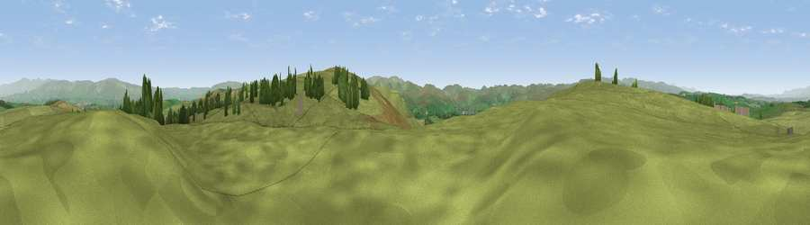

Viewpoint near Orton
#14323 in England · top 51% of its area beats it · near OrtonThe view, rendered

A 360° render of this exact spot computed from the terrain model, tree cover and land cover — summer colours, afternoon light, calibrated against photographs of famous viewpoints. Real trees, hedges and buildings will differ in detail.
The panorama
Grey silhouette: terrain skyline in each direction (720 bearings, Earth curvature and refraction included). Dashed green: skyline with trees (+15 m) and buildings (+8 m) as obstacles. Blue strip: how far the ground is visible on each bearing.
Where the view opens
Wedge length = distance to the farthest visible ground on that bearing (vegetation-aware). Rings at 10, 25 and 50 km.
What fills the view
93% grassland · 5% woodland ·
Angular shares of the visible panorama (visual magnitude), not map area. Landscape diversity 0.12 (0–1 Shannon).
Key numbers
More beautiful places nearby
The staircase of upgrades: each row has a higher view potential than everything closer. Driving times are estimates from straight-line distance, calibrated against real road routing — check an actual route before setting out.
| Place | Direction | Drive | Score |
|---|---|---|---|
| Knott | SSE · 1 km | ~3 min | 68.2 |
| Long Scar Pike [Coalpit Hill] | W · 5 km | ~11 min | 68.9 |
| Viewpoint near Crosby Garrett | ESE · 8 km | ~16 min | 69.3 |
| Long Fell | W · 9 km | ~17 min | 72.4 |
| Blease Fell | S · 10 km | ~19 min | 73.3 |
| Uldale Head | S · 10 km | ~19 min | 74.0 |
| Green Bell | SSE · 11 km | ~20 min | 75.2 |
| Randygill Top | SSE · 11 km | ~21 min | 76.0 |
54.48430, -2.55370 · source: screening · position refined by local search. Computed location — check access rights before visiting.